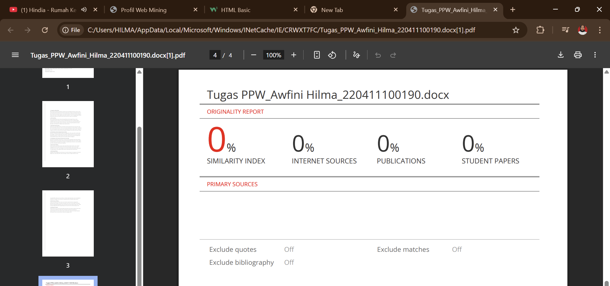

Introduction
Nama: Awfini Hilma
NIM: 220411100190
Alamat: Kepulauan Kangean, Sumenep
Email: awfinihilma@gmail.com
Nomor: 0813xxxxxxx
Status: Mahasiswa aktif
Cerita saya: Saya berasal dari kepulauan Kangean, anak ke-2 dari 4 bersaudara. Sejak kecil saya suka berenang di laut dekat rumah. Pendidikan saya dimulai dari TK AL-Hidayah, SDN Arjasa 1, MTS AL-Hidayah, lalu melanjutkan ke MA Nurul Jadid di Probolinggo, dan kini kuliah di Universitas Trunojoyo Madura.
Hasil Turnitin: Klik di sini
